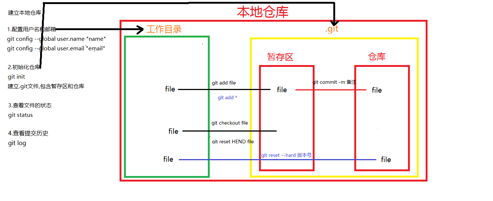

3.Git本地仓库
Git本地仓库指的是开发者计算机中的仓库。
命令行方式：任意目录（建议开发根目录）右键 > Git Bash Here
配置用户 git config --global 其他
配置用户的意义在于记录开发者信息，以便在版本控制记录开发者的操作行为
git config --global user.name "自已的名字" git config --global user.email "自已的邮箱地址" --global 配置当前用户所有仓库 注：配置用户只需要执行1次，可以重复使用。初始化仓库 git init
我们如果想要利用git进行版本控制，需要将现有项目初始化为一个仓库，或者将一个已有的使用git进行版本控制的仓库克隆到本地。
git init会在当前项目目录中创建一个名为.git的隐藏目录，这个目录包含了暂存区和仓库两个区域，有了这个隐藏目录就可以使用git来管理项目了，通过ls -al 可以查看。查看文件状态 git status
初始化仓库后便可以进行开发了，进入到刚刚创建好并初始为仓库的目录，添加我们开发需要的文件。 注：git会忽略空的目录
添加文件到暂存区 git add file
可以将一个未追踪的,已修改的文件放入暂存区
git add *将工作区的所有内容提交到暂存区
将暂存区的内容放入本地主仓库 git commit -m 备注的信息
如果不输入备注信息会提示一个vi编辑器，在vi编辑器中提示输入备注信息
每一次提交到本地仓库都必须输入备注信息
查看提交历史 git log
显示结果有：某一次提交的唯一标记,提交人的信息,提交的日期
暂存区检出,git checkout 文件名
如果一个文件已经存放到暂存区,希望从暂存区恢复到修改前的状态
将文件从暂存区取出,替换当前的本地文件
暂存区检出 git reset HEND 文件名
将已经添加到暂存区的,并且该文件没有被修改过文件,可以从暂存区取出
只是将文件从暂存区取出,但是并不使用
本地仓库检出 git reset --hard 提交的版本号
将文件从本地仓库中恢复,取出仓库中的文件替换工作目录中的文件
回退之后,该版本号之后的提交版就失效了
这种操作是不可逆的
